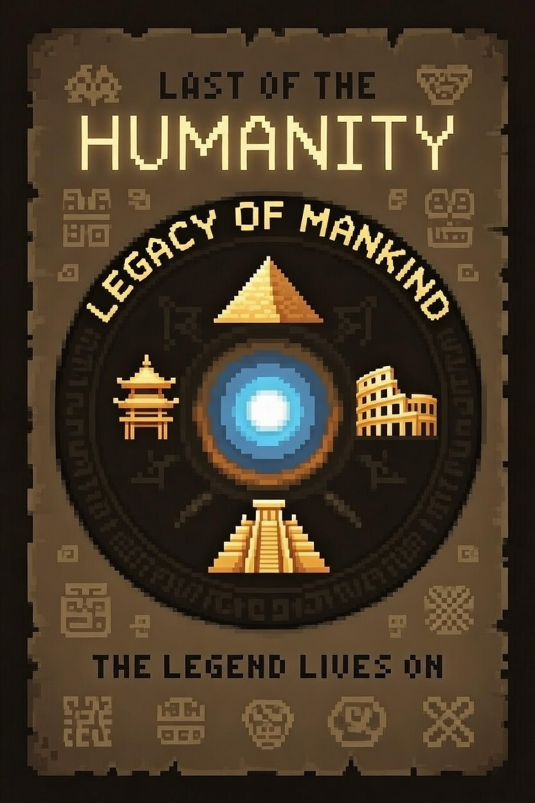

10 000 лет борьбы. Четверо пали.
Последний хранитель человечества выходит из тени.
2D пиксель-арт экшен с видом сверху в духе Soul Knight. Динамичные бои, ИИ-враги и союзники, нелинейный сюжет через флэшбеки — от неолита до степей Казахстана и современности.
Последний из пятерых героев неолита защищает человечество 10 000 лет. Четверо пали. Учёные открывают портал демонам — пора выйти из тени.
Вступительная часть для диплома: 5 заданий с боями, флэшбеками и сюжетом.
Обычная жизнь. Ночной демон-разведчик в переулке.
Флэшбек. Создание Пятерых, обучение у костра.
Пробраться в комплекс, бой с демонами и охранниками.
Флэшбек. Помощь кочевникам, лук и копьё.
Мини-портал, страж-разлом. Новая способность.